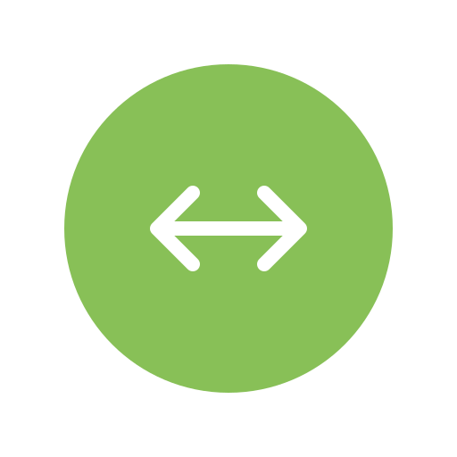
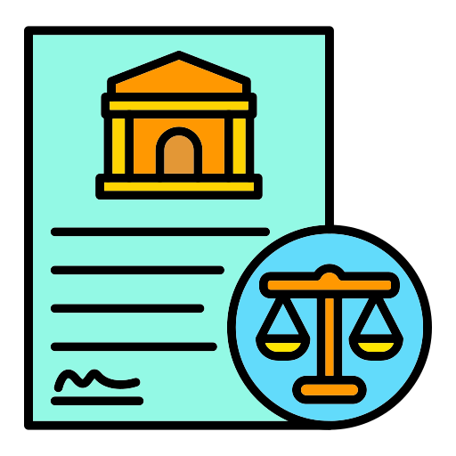
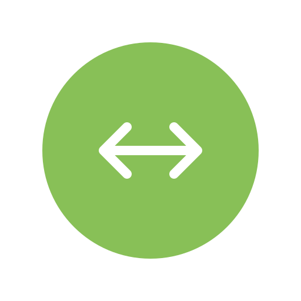
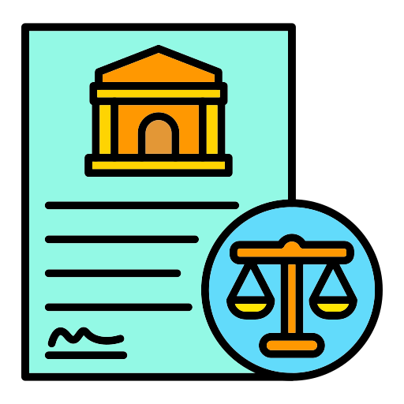
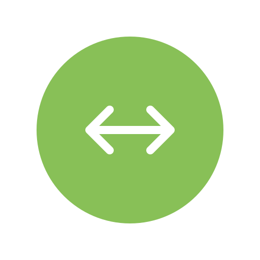
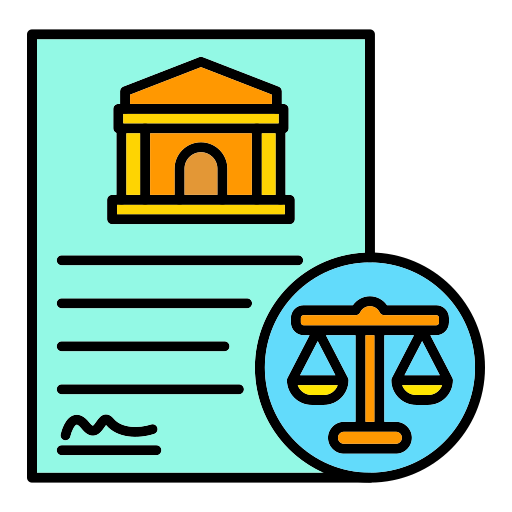

Home
About
Services
Contact
Nagrik Aur Samvidhan

"This solution empowers every citizen, including teens, to understand their rights and
to make informed and impactful decisions for themselves and their country."
Only one feature out of all is Completely Made(Prototype). all the other Features are under Maintainance :)
Blind People>
Deaf People
Common People
 
